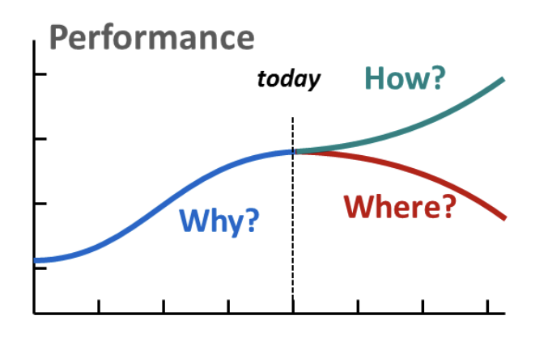
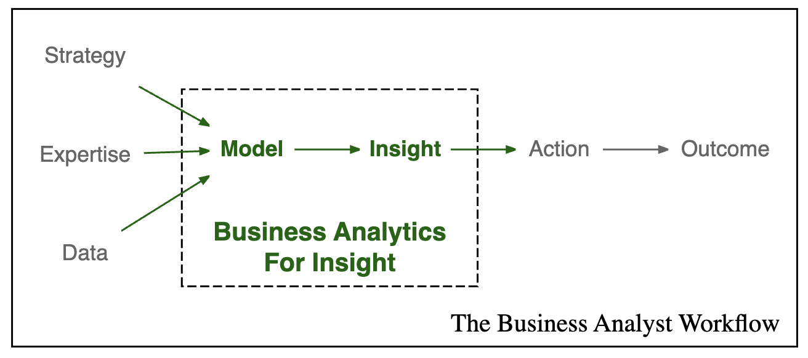
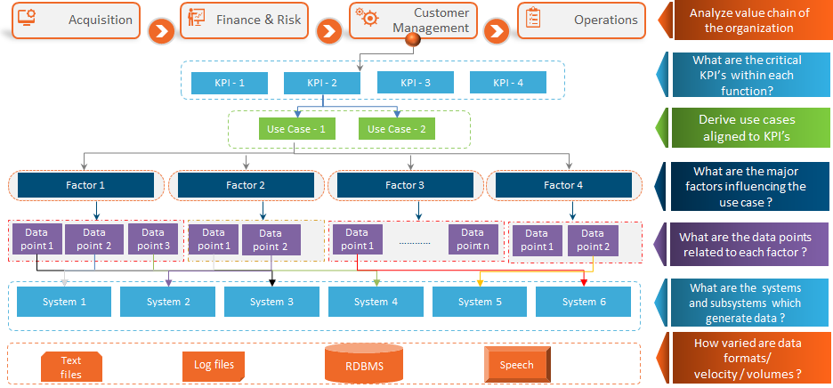

Decision Science
2. Business context and strategy
Head of Data Science @AdoreMe
2023-12-08
Three critical questions

- What happened (data / facts) and Why (inference)
- Where are we likely going if we do things as before?
- Is it a feared scenario?
- What contributes to it?
- How to achieve the desired trajectory? Is it realistic?
Trajectories and good ol’ SWOT
Ecommerce selling apparel. What do they want? What should they do?
\(\max\) Top line (revenue) | bottom line (EBITDA) | customer satisfaction.
- Status Quo: what is most likely trajectory? What contributes to it?
- looks good \(\implies\) strengths
- looks bad or unsatisfactory \(\implies\) weaknesses
- Feared trajectory (shocks, risks, macro environment, competition):
- scenario looks bad \(\implies\) threats
- Desired trajectory. Is it reasonable and realistically achievable?
- if yes \(\implies\) opportunities
Tradeoffs: it depends
- What if it’s a startup that received big funding?
- What if it wants to capture market share?
- What if the goal is to have sustainable profitability?
- What if they position themselves as luxury?
The question we asked is too generic. We need a strategy and possible decisions, constraints in their value chain
Principle nr. 8
What is true and how should I act?
What is a strategy anyways?
NOT just aspiration towards goal or a vision or a target.
| Step | Outcome | Characteristics |
|---|---|---|
| Honest diagnosis | Identify obstacles | Few critical, relevant aspects |
| Guiding policy | General approach to overcome | Focused on key aspects |
| Coherent actions | Support policy with action plan | Coordinated and focused |
Principle nr. 9
Know your firm’s strategy. Call out bad strategy.
Business Analysts’ Workflow
Source: Adam Fleischhacker; This process is highly iterative and depends on having good feedback and collaboration
Characteristics of this process
- Outcome-focused: What’s the point otherwise?
- Strategically-aligned: Not all outcomes are equal!
- Action-oriented: Biggest pitfall of any AI/ML initiative – when it’s not actionable!
- Needs clear and persuasive communication
- Computationally rigorous:
- Correctness, reproducibility and maintainability
- Accesible: idealy in an app which users explore
Principle nr. 10
Don’t get too enamored with exploratory data analysis
Other processes to be aware of
- Scientific process (it’s not “the science says …”)
- Statistics and experiment design (12 steps)
- Causal inference
- Machine Learning (12 steps)
- CRISP-DM, Tuckey’s EDA
- Software Development, Product Management
- Algorithmic/computational problem-solving
Value Chain meets Decision Science
Source: bayesianquest – Data Science Strategy Safari. This framework was useful in my role as the Head of Data Science
Principle nr. 11
Understand what thy buzzwords mean
Weak AI
Decision-Making Under Uncertainty at Scale
- domain-specific (medicine vs finance vs automotive …)
- data-driven (key idea of learning from data)
- varying, limited degrees of autonomy
- sometimes concerned with networks of agents
Cybernetics is the OG AI
The science of general regularities of control and information processing in animal, machine and human
Unpacking Cybernetics
- Control \(\implies\) goal-directedness. Action to steer to a trajectory or autopoesis (perserve \((S-f)_{org}\))
- Information Processing \(\implies\) pattern recoginition, perception, modeling & inference
- General regularities \(\implies\) plausible of control and information processing across fields and CAS
- Animal refers to applications in biology, machine – in engineering, and human – in our society and behavior.
Analytics vs ML vs Stats

Source: xkcd; Instead of Stats, I would say we want Causal Inference
Principle nr. 12
Analytics is for inspiration. Formulating a hypothesis is a science and art
Principle nr. 13
When doing ML, split your damn data
- is there a pattern to be found?
- do we have relevant data?
- \(\implies\) we’re in business of ML!
Principle nr. 14
Often in ML, you use predictions for optimization
- make sure loss function is aligned with the business cost
- make sure you’re not over/under-fitting
Principle nr. 15
You can’t derive a theory using data alone
- Causal Inference is harder than ML
- You want to know the consequences of your intervention
- Theory \(\longrightarrow ...\) Causal Model + Data \(\longrightarrow\) New insight
Principle nr. 16
Statistics is about changing your action and mind under evidence
- Under what circumstances would I change my default action?
- Does the evidence make my \(H_0\) ridiculous?
- Is it due to chance?
Roles in firms: Stuff data people do
- Data Engineering – pipelines and infrastructure
- Data Analysts – detectives, decision support
- BI – infrastructure for reporting, clean, modeled data
- ML Engineer – builds ML models and deploys them
- Data Scientist – jack of all trades, often lots of stats
- Product Analyst – cares about experiments
- Decision Makers & Domain Experts are usually the clients
At some point, we’ll discuss
- AI product management:
- PAIR: People+AI research (Google)
- Event Storming
- Ethics and controversies of AI
- Full Stack data apps
- ML Systems and technical debt
- Computational Reproducibility
- Replication crisis
- Media and Bullshit
More on course philosophy
- Motivation for why is something important (method, idea, model, process, …)
- Develop conceptual understanding and intuition
- Theoretical rigor only where necessary
- Use simulations as a safe playground
- Practical and realistic applications
- problem formulation: focus on decision-making
- start with simplest models
- deal with messy data and introduce more realism
The danger of thinking in buckets
Here is R. Sapolsky’s argument about studying different aspects of human behavior:
- Our brains think about stuff in buckets / boundaries
- These buckets influence our memory, language, behavior
- We stop seeing the big picture:
- Bad at differentiating facts within buckets
- Exagerrate differences between buckets
- Tempting to claim that a bucket is the only, true explanation
- Some of the most influential scientists fell into this trap
We’ll walk across many buckets
- Problem space: the CAS of a firm, but not only
- Cognitive science: intelligence, rationality, foolishness
- Probability Theory: Reason under uncertainty, DAGs, DGPs
- Statistics: formulating hypotheses, experiment design
- Machine Learning: next year we focus on predictions
- Computer Science: how to make the stuff usable
- Philosophy: ethics, epistemiology, phil. science
- Mathematics: elegant abstractions and tools